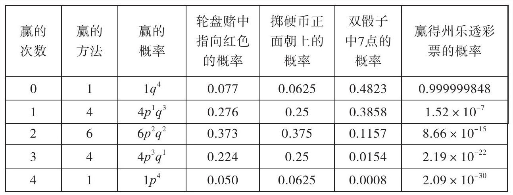
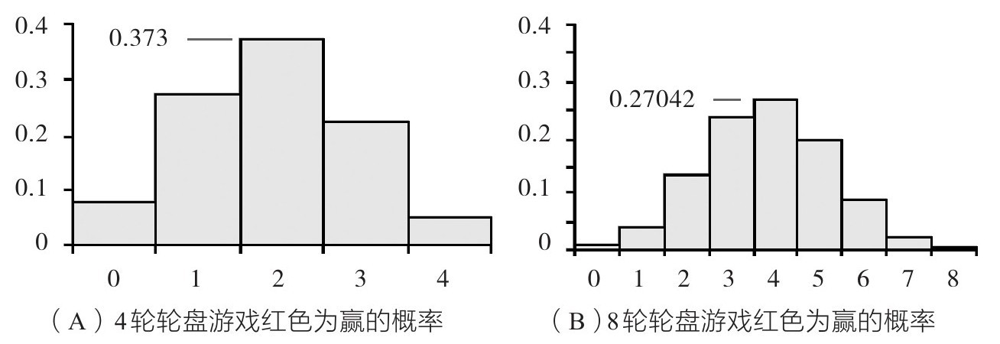
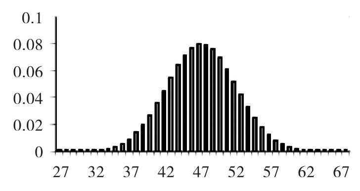
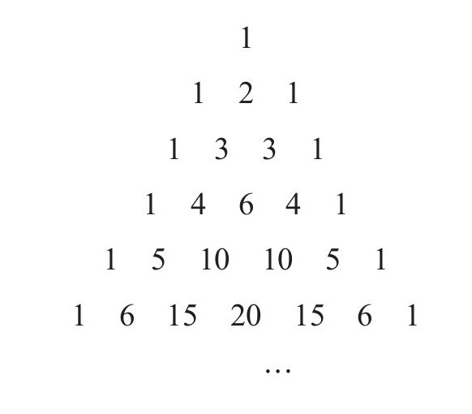
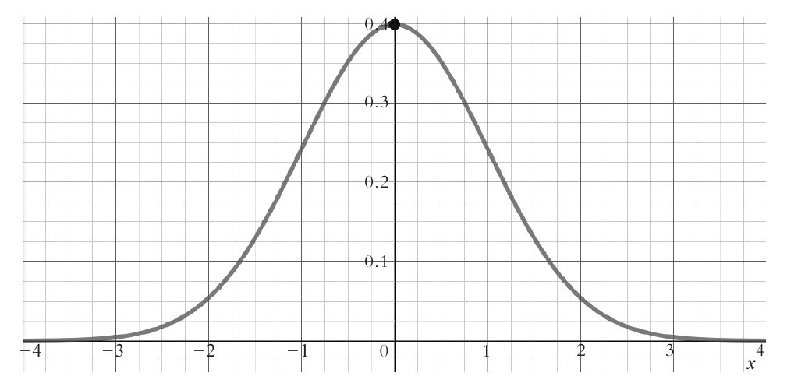
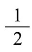

——佩尔西·戴康尼斯[64]
物理世界中没有完全对称，也建造不出公差极小或理想模型的机器。这是一个复杂的世界，各种隐藏变量相互交错，难以通过精确的测量确定事情的发生。因此常有偶然事件发生。我们经常用概率来解释复杂的偶然现象。
如果你不幸患上了罕见的骨髓增生异常综合征，你该怎么办？这是一种骨髓无法提供足够健康的造血细胞的癌症。你将会面临两难境地：要么接受骨髓移植，成功率为70%；或者安静地等待10年内死亡，概率也是70%。当然，移植手术也有风险：你需要化疗，如果出现感染，30%的概率你在接下来的6个月内死亡。
布莱恩·齐克蒙德-费希尔在密西根大学公共卫生学院教授风险和概率论，他在1998年也面临着这样一个两难困境。他被诊断为患有骨髓增生异常综合征，医生告诉他，如果不接受治疗，他只剩下10年的生命，如果接受治疗，恢复到正常生活的概率为70%。[65]他赌了一把，选择移植手术。这里的关键点在于，概率并没有针对特定的人。70%的比例来自全国各地数百（或许数千）个身处此境的个人的统计数据。数据结果指趋势和可能性，而不是个人结果。
以你认为罕见的事件为例。它发生的数学概率大概只有百万分之一，但这可能是因为它被当作小范围现象。比如，闪电击中一只过街松鼠。当我们用熟悉的语言谈论概率时，我们只是抽象地谈论，而不是采用系统性方法证实这一术语。因此百万分之一一般用于美国某个大地区发生的事情。但美国幅员辽阔，我们只在坐飞机时俯瞰过它，我们从上空看到渺小的房屋、树木以及无边的绿地。我们未考虑那里有多少只松鼠，也不考虑一次有多少只松鼠穿过大街。科学家估计美国大概有11.2亿只松鼠，是美国人口总数的3倍。松鼠经常穿梭于街道。
美国有11.2亿只松鼠，658万千米的公路，9826676平方千米的土地。在任何一天的任何一分钟里，平均有300只松鼠穿过马路。[66]这个数据似乎合理可信。雷雨天气下可能会有更多。美国每年平均有超过11万次的雷暴雨，夏天的雷暴雨比冬天多得多，这使得夏天闪电直接击中松鼠的可能性非常大。
自然界中每一件事都必须解释大量不确定的可能性。掷骰子很大可能取决于抛掷时在手中的初始位置，而很小程度上取决于房间里的声波。这仅仅是决定骰子落地的两个外部因素。它如何碰到桌子，它的平衡度，它如何从手上滚出去，以及它碰到桌子的弹性，都会影响到它最后到底哪一面朝上。
假设我们来玩一个游戏，这个游戏只有输赢，没有平局。X表示事件的结果，P（X）表示事件发生的概率。例如，如果你抛硬币，P（正面朝上）为1/2，P（反面朝上）也是1/2。美式转轮盘游戏的转盘上有38个不同的小方格，包括0和00。其中18个为红色，另外18个是黑色；0和00是绿色。如果你投注红色，P（红色）为18/38，简单地说是9/19，而P（非红色）将是10/19。如果你掷骰子希望得到1点，P（1）为1/6。
选择任何一个类似的游戏，玩4次后问：赢的概率是多少？0次？1次？2次？3次？或4次？这是一个值得研究的问题，因为真正的赌博是连续的输赢。想想琼·金瑟尔的4次彩票中奖？你或许还想知道在四次赌博中赢过半数的概率，或者至少赢两次的概率是多少。
假设W和L分别代表赢和输。输4次标为LLLL，赢4次标为WWWW。只有一种方法让4次全赢或者全输。那么4轮赢一次的概率是多少呢？4轮赢一次有4种方法，分别标为WLLL、LWLL、LLWL和LLLW。同样，4次只输一次也有4种方法。4次中赢两次的概率呢？赢两次组合为以下6种：WWLL、WLWL、WLLW、LWWL、LWLW和LLWW。这里我们没有考虑输赢出现的顺序，只是单纯地列出四个字母标记而不考虑顺序。在互斥事件中，即事件对之前结果没有任何记忆，比如轮盘赌或抛硬币游戏，事件两个不同情况发生的概率是每个情况的概率之积。根据我们在第四章所讲的，如果可能的结果是A和B，那么A和B同时发生的概率就是P（A）和P（B）的积，A或B发生的概率就是P（A）和P（B）之和。
现在我们来看看四轮赢两次的例子。简化起见，我们用p代表P（W），q代表P（L）。赢一次的概率是p，因为赢和输是相互排斥的（也就是说，每一轮的结果都不依赖于前一轮），我们可以看到，四轮赢两次的概率是p2q2。这是因为你要赢两次和输两次，如果逻辑联系是“和”，概率要相乘。但是，正如我们所看到的，这可能发生在以下6种不同的情况下：WWLL、WLWL、WLLW、LWWL、LWLW、LLWW。
由于逻辑联系是“或者”，以上任何一种情况发生的概率则是ppqq+pqpq+pqqp+qppq+qpqp+qqpp，或简写为6p2q2。
如表7.1所示，已知三种游戏和彩票的p和q值，4次中分别赢0次、1次、2次、3次和4次的概率如下。
表7.1

根据表7.1，理论上来说，在轮盘赌和抛硬币两个游戏中，四轮玩家最有可能赢两次。我们可以列出这两个游戏玩一百轮的概率表，不过这个表会很长，且不切实际。我们可以假设抛硬币100次，正面朝上为赢，玩家最可能赢50次，但是玩轮盘赌100次，指向红色为赢的话，玩家最可能赢的次数仅47次。[67]谁也无法得知是哪47次。
请注意轮盘和硬币的对称性，骰子的轻微对称性和彩票的极度不对称性。表7.1中轮盘赌那一列的数据怎么样？以下柱状图显示红色为赢的次数和概率[图7.1（A）]，该图是以2为中心的斜对称图，而重心点（几何平衡点）似乎小于2。当游戏轮数增加到8次时，重心倾斜就更明显了[见图7.1（B）]。[68]

图7.1
增加轮盘赌次数，柱状图将更平缓。因为100次表现为柱状图会有101个长方形，而每个长方形都有一个单位宽的基底。[69]

图7.2 100次轮盘游戏红色为赢的概率
图7.2就是所谓的频率分布图。每个数字对应的柱状高度告诉我们成功可能发生的频率。横轴上方分布的柱状面积总和为1。换句话说，柱状图面积代表所有可能事件发生的概率100%。绝大多数频率分布集中在32到62之间，最高的柱状为47。32之下和62以上的概率非常小，我们在这个图上看不到。例如，P（31）=0.00034，P（63）=0.0006。红色不太可能出现20次或80次，然而，就像所有的巧合一样，这也并非不可能。
对于抛硬币游戏，如果p=q，这是完美对称。但是p不一定要等于q，我们发现，如果p离q越远，斜对称越明显。在表7.1中，我们在左边的第5列中看到完美对称，而在第7列中却几乎没有对称。但是所有的计算都来自于第三列，这是所谓的神奇的“帕斯卡三角”，这是概率工具库的关键。
帕斯卡三角数字排列如下：

图7.3 帕斯卡三角
图7.3中的每一个数字都是上一行两个数字之和；例如，顺数第5行的第三个数字10是第4行上数字4和6之和。首先请注意这些数字的对称性，然后请注意，这些数字和我们增大两个变量（如p和q）之和的幂时所看到的数字相同。当我们增大（p+q）n的幂时，我们发现了相同的数。例如，当n=2时，（p+q）2=（p+q）（p+q）=p（p+q）+q（p+q）=p2+pq+qp+q2=p2+2p1q1+q2。如果我们列出n=1，2，3，4，5，6……时的公式，我们得出下面的三角形数列。
（p+q）0=1
（p+q）1=1p1q0+1p0q1
（p+q）2=1p2q0+2p1q1+1p0q2
（p+q）3=1p3q0+3p2q1+3p1q2+1p0q3
（p+q）4=1p4q0+4p3q1+6p2q2+4p1q3+1p0q4
（p+q）5=1p5q0+5p4q1+10p3q2+10p2q3+5p4q1+1p0q5
（p+q）6=1p6q0+6p5q1+15p4q2+20p3q3+15p2q4+6p1q5+1p0q6
……
不管n等于几，二项式（p+q）n的展开式中的常数恰好是帕斯卡三角中的数。
这个三角形早在帕斯卡之前就出现了。[70]在帕斯卡发现这个三角形并以他的名字命名的100多年前，公元12世纪，它出现在中国代数学家朱世杰的著作中，后来出现在彼得鲁斯·阿皮亚努斯1527年出版的著作《算术学》的标题页中[见于小汉斯·荷尔拜因的绘画作品《大使》（1533）中]。[71]如今在伊朗，这个三角形被称为“海亚姆三角形”，因为著名的波斯诗人及数学家欧玛尔·海亚姆在12世纪用这个三角形来寻求n次方根的计算方法。在中国，如今它被称为“杨辉三角形”，是为了纪念在13世纪把它引入中国的另一位数学家杨辉。在意大利，它被称为“塔塔利亚三角形”，用于纪念数学家尼可罗·塔塔利亚，这位数学家早帕斯卡一个世纪。然而，帕斯卡集合了很多关于此三角形的研究结果，并用于概率论。[72]
概率分布
图7.2显示了100次轮盘赌中红色赢的概率。我们从表7.1中的计算实例和二项式（p+q）n中的系数看到了该柱状图的形状。图中柱状的分布被称为二项分布。“二项”一词来源于基于两个单项式p和q的结构，当n增大，柱状图的顶部会变得更平缓，像一个钟形曲线。n越大，曲线越平滑。
以n数值越大为例。n的数值越大，我们在保留柱状面积即概率不变的情况下改变柱状图。因为每个柱状的基底的宽度都为一个单位，概率的分布由矩形的面积和高度来表示。通过巧妙的转换、缩小和放大，我们可以获得一个新的图，它可以保留所有原图有用的信息。[73]当然，现在修订版的图中的纵轴不再代表概率。概率取决于矩形的面积。因为我们以同一因子放大了纵轴，缩小了横轴，矩形的面积不变。
我们获得了什么呢？这是一个奇迹，一个极具创意的想法。这个曲线图（图7.2中出现的二项式分布条形图）表示在100次轮盘赌中红色为赢的概率，该图可能和某个特定的数学曲线图非常相像。这里要理解的很重要的一点是，这条特定的曲线描述了大量由偶然行为引起的自然现象。令人吃惊的是，这个曲线图模拟了轮盘赌游戏，尽管它与小球落入红色口袋的轮盘没有明显的关联。更令人惊讶的是，这个曲线图同样模拟了抛硬币游戏。一条曲线可以模拟出这么多不同事件的概率。为了了解某一特定事件发生的概率，我们必须将信息输入模型中。我们必须提供两个数字——平均值（平均数）和标准偏差（偏离均值的结果分布情况）。[74]通过这两个数值，我们能获得比如轮盘赌中成功p（球落入红色口袋）的概率是9/19。一旦我们有了具体的p和N（赌博次数）数值，就可以计算出我们在轮盘赌中红色为赢的标准偏差。[75]它测量的是偏离均值的结果分布情况，通常称为标准方差。[76]
因此，每一个二项式的频率曲线都是通过数学技巧（通过移位和缩放）转换成特殊而强大的标准正态曲线图，如图7.4。[77]

图7.4[78]标准正态曲线图
图7.4中曲线底部的数字是偏离平均值的标准差的次数。我们把试验归类为多组标准方差，无法看见单个事件结果的概率。图7.4中曲线下方的变量X为测量成功的次数与最有可能成功次数之间的偏差。所以横轴X用标准偏差来衡量。曲线的高度不再表示概率，因为它被按比例缩小以保持曲线下的面积。我们由此获得了很有价值的信息。第一，曲线下约68%的面积在平均值的一个标准偏差之内，大约95%的面积落在平均值的两个标准偏差内；第二，标准偏差由拐点标记。拐点所在的曲线形状由下凹到上凹。
尽管100次轮盘赌出现红色结果的标准偏差与100次掷硬币的标准偏差不同，两者的曲线却出奇的一致。曲线的解释也各不相同。尽管图7.4中的曲线可能与许多不同的赌博事件的概率分布相同，但坐标轴上的标记必须是特定的均值和标准方差。该数据取决于游戏次数和正面结果的概率。
当我们研究频率分布时，我们往往主要看偏离常态的偏差情况。但是，远离正常范围之外的情况会对总体累积结果产生毁灭性的影响。我们很少关注那个区域，因为我们主要考虑的是集中趋势和极可能发生的事件，而不是最不可能发生的情况。
我们是否考虑过不太可能或最坏的情况？或者，我们只是简单地认为它们太罕见所以不予考虑。它们是自然的巧合或偶然事件，是实在的偶然物理事件。尽管我们预测完美的抛硬币中，随着抛掷次数增多，正面朝上与反面朝上的比率将趋向于1，但实际游戏中正面朝上次数可能会远远超过反面的次数。例如，如果你抛100次硬币，正面朝上和反面朝上的区别可能是100，但不会超过100。倘若更保守一些，100次抛硬币中有41次正面朝上和59次反面朝上，正面朝上次数与总次数比为41%，反面朝上次数与总次数比为59%。听起来差别很大。正面和反面相差18%。然而，如果你抛硬币10000次（正如第六章所述），希望比例大大缩小，接近

，如正面朝上比为0.49，反面朝上比为0.51，你会发现其中4900次正面朝上和5100次反面朝上，相差200。换句话说，即使比率缩小到1/2，差额可能越来越大。最重要的是，由于无法预测结果分布，我们发现随着抛掷次数的增加，连续正面朝上的概率也在增大。我们在第六章已经看到了这种情况。这意味着有可能出现连续正面朝上的情况。奇怪的是，当我们抛硬币1万次，这枚硬币也不知道（因为它没有记忆）它参与了游戏。我们可以抛1000次硬币，休息一下，再抛1000次，然后继续这样下去。每一次都可以算作新的开始。因此，1万次抛硬币中出现反面朝上和正面朝上相差200，而1000次中仅相差20，这是怎么回事呢？这200次是什么时候发生的？会不会全都连续出现在最后的1000次抛掷中？当然这也将是一个巧合，它和任何其他情况都有一样的发生概率！
理论上来说，轮盘赌游戏应设在某个我们从未见过的完全平稳的房间，精确的圆球在完美无暇的平衡轮上滚动弹跳，平衡轮下方设有间距均等的小口袋。真实的赌博发生在现实世界，球和平衡轮都由机器加工制造，偏差得到严格控制，但生产球和平衡轮的机器都是人制造的。理想与现实之间的联系很神奇但却错综复杂，无法解释的现象令我们头晕目眩。
理想世界VS现实世界
在现实世界中，我们可以通过观察制表和绘制的频率分布图来测试轮盘赌轮子的公平性或偏差。这个图可能看起来不像完美的模型图，但是如果轮子确实毫无偏差，并且如果我们观察足够多轮数，那么观察结果图应该类似图7.4（至少形状相似）。如果我们演示n次实验，可以观察到n个结果O1、O2、O3，……，On，概率分别是p1、p2、p3，……，pn，从而得出概率分布图。例如，掷骰子时，6面中的任何一面都可能朝上，每一面的概率为1/6。在公平的游戏中，实验中的概率分布图应该与理论上的分布图非常相似，在并非完美的现实世界必然会有差异。
在这个语境中，“完美”意指“数学上的”。了解真实的赔率需要将观察收集的数据和在完美世界中所预期的计算结果进行比较。赌徒可能知道赔率不会偏向他，但他希望现实世界能偏离赔率而支持他。这种希望来自一个执念——有人会赢。他冒着极大的风险挑战运气的数学期望值。
英国数学家卡尔·皮尔逊1892年7月至8月期间在蒙特卡洛赌场进行了为期4周的研究，分析了公开的中奖记录。结果发现，这些机械装置尽管尽可能精确，尽可能地调整适应赌桌，但它并没有完全遵守偶然法则。[79]假设数学计算精确，这些法则告诉我们，球落入37个轮盘赌口袋中任何一个的机会均等。
0口袋除外，球落入红色或黑色口袋的概率是相等的。[80]这就意味着如果轮盘转动次数非常多，球应该有50%的概率落入红色口袋。
然而，在花了两周时间研究了4274次蒙特卡罗轮盘的旋转之后，皮尔逊发现它们的标准偏差几乎是预期的10倍。公平轮盘赌上发生这样一件事的赔率超过109：1！皮尔逊写道：“如果蒙特卡洛轮盘赌从地球上的地质时代开始旋转，假设这是一次偶然，我们就不应该期望类似两周一次的概率发生。”[81]
机缘巧合，皮尔逊偶然发现了一件不太可能发生的事，这可能是世界历史上仅有的一次。是否可以因此而怀疑轮盘赌的公平性呢？他的一名学生再次进行了为期两周的实验，发现一些不太可能却期望出现的结果，这些结果玩5000年不间断轮盘赌才出现一次。另一名研究人员在蒙特卡洛进行了两周的观察，研究了7976次旋转，计算出了轮盘赌的赔率是263000:1。其他的实验也发现了同样的巧合。在1893年的一项研究中，30575次旋转得出赔率50000000:1。皮尔逊指出：“如果根据公开的、公司没有拒付的收益来判断，根据机会法则，从精确科学的角度来看，蒙特卡罗轮盘赌是19世纪最惊人的奇迹……”[82]
理论背离实践不太可能，皮尔森写道：“这种偏离的赔率是109：1。”[83]他的这个观察结果与数学预期的理论不同。著名的数学家沃伦·韦弗描述过20世纪50年代的一次事件，当时蒙特卡罗的轮盘连续28次出现平局。这种情况出现的赔率是268435456:1。根据在蒙特卡洛每天的成功次数，这样的事件500年才会发生一次。[84]游戏专家约翰·斯卡尼描述了1959年7月9日在波多黎各的圣胡安酒店发生的一件事，当时轮盘赌中小圆球连续6次落在数字10上。发生这种情况的赔率是133448704:1。[85]
如果游戏是公平的，我们所观察到的是极为罕见的事件，那么这个游戏并不真正公平；但是，我们从弱大数定律知道，如果试验次数足够大，极其罕见的事件至少发生一次的可能性是相当高的。
还记得著名的电影《卡萨布兰卡》中的巧合吗？它也是不太可能发生，在世界历史上仅此一次。在电影中，年轻的保加利亚女孩的未婚夫扬在玩轮盘赌，瑞克夜总会的老板瑞克·布莱恩试图保住他出境签证的钱。年轻漂亮且天真的阿尼娜曾向瑞克询问路易·雷诺警察是否可信，他答应要给她签证。
让我们回顾一下瑞克咖啡馆游戏室的下一幕：扬坐在轮盘赌桌旁。他只剩三个筹码了。瑞克走进来，站在扬身后。
轮盘赌球落入口袋22的赔率是1369:1。看电影时我们不会怀疑。这是虚构的，可以说很公平了。但即使是在现实生活中，在这个概率的公平比赛中，看到22连续两次中奖，我们也不必觉得惊讶。